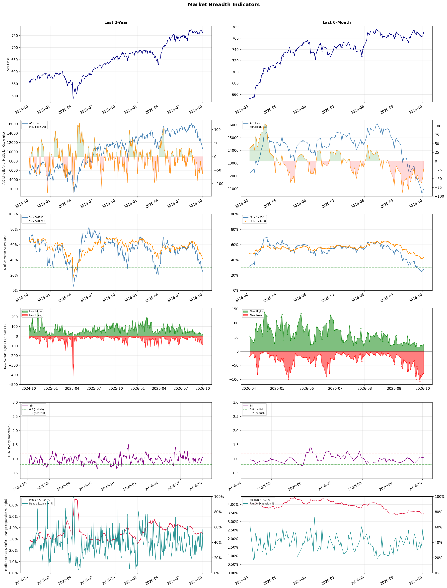

A daily market breadth and sector rotation report for active investors
| Item | Read |
|---|---|
| Regime | Defensive |
| Risk posture | Defensive |
| Universe | 1,320 stocks tracked · 23 new 52-week highs · 30 active swing setups |
| Breadth | only 27.6% of tracked stocks are above SMA50, new lows exceed new highs (78 vs 23), McClellan oscillator (breadth momentum) is negative at -22.6 |
| Leadership | Oil & Gas Refining & Marketing, Diagnostics & Research, and Semiconductor Equipment & Materials |
| Weakest groups | Resorts & Casinos, Gambling, and REIT - Mortgage |
Use this report to prioritize research and chart review; validate entries, stops, liquidity, earnings, and risk before acting.
| Item | Read |
|---|---|
| Primary read | Defensive regime with Defensive risk posture. |
| Research queue | PBF, MPC, DINO, VLO, CSAN |
| Leadership focus | Oil & Gas Refining & Marketing, Diagnostics & Research, and Semiconductor Equipment & Materials |
| Caution list | Resorts & Casinos, Gambling, and REIT - Mortgage |
| Review prompt | Check extension risk, chart location, fundamentals, valuation, and earnings before using any research row. |
| Item | Read |
|---|---|
| Primary read | 4 active risk warnings; use screen output as watchlist input only. |
| Bullish screens | AMAT, KLAC, LRCX, AMD, ARM |
| Bearish screens | WOOF, XRAY, NFLX, WRD, BSX |
| Alerts / levels | Automated trigger, stop, ATR, liquidity, reward/risk, and event-risk levels are pending future enrichment. |
| Review prompt | Open the linked chart, define trigger and invalidation, then check liquidity and event risk independently. |
Risk Posture: Defensive — screen backdrop favors caution; require independent risk review before new exposure
Metric context: McClellan below -50 = elevated selling pressure; below -100 = washout territory. Range Expansion = share of stocks with daily range above their 20-day average. Signal Density = share of tracked names appearing in signal screens.
| Breadth Date | % > SMA50 | % > SMA200 | New Highs | New Lows | McClellan | Median Range | Avg Range | Median ATR14 | Range Expansion | Signal Density |
|---|---|---|---|---|---|---|---|---|---|---|
| 2026-10-02 | 27.6% | 43.6% | 23 | 78 | -22.6 | 3.0% | 3.5% | 3.4% | 43.2% | 4.5% |

Prior comparison date: October 1, 2026
| Metric | Prior | Current | Change |
|---|---|---|---|
| Regime | Defensive | Defensive | unchanged |
| Risk Posture | Defensive | Defensive | unchanged |
| % > SMA50 | 25.8% | 27.6% | +1.7 pts |
| % > SMA200 | 42.3% | 43.6% | +1.3 pts |
| New Highs | 19 | 23 | +4 |
| New Lows | 83 | 78 | +5 |
Top-10 industries entering: Copper and REIT - Hotel & Motel. Top-10 industries leaving: Apparel Retail and Software - Infrastructure. New multi-signal long setups: AMAT, AMD, AMPL, ARM, JCI. New multi-signal short setups: BCE, BSX, CMCSA, CTMX, IONS.
| Status | Tickers | Read |
|---|---|---|
| Added | AMAT, AMD, AMPL, ARM, BCE, BSX, CMCSA, CTMX | New technical screen matches vs prior report. |
| Removed | ACMR, CWH, ELS, EPRT, FER, GLPI, HNGE, JBS | No longer present in today's technical screen matches. |
| Still Active | APP, BB, DT, KEYS, LBTYK, LRCX, MPT, P | Appeared in both current and prior reports. |
| Promoted | none | Model Screen Score improved by at least 15 points. |
| Downgraded | none | Model Screen Score declined by at least 15 points. |
| Direction | Industry | ETF | Prior Rank | Current Rank | Days | Rank Change |
|---|---|---|---|---|---|---|
| Rose | Semiconductor Equipment & Materials | SOXX | 80 | 3 | 28 | +77 |
| Rose | Electronic Components | XLK | 81 | 6 | 28 | +75 |
| Rose | Semiconductors | SOXX | 72 | 7 | 42 | +65 |
| Rose | Communication Equipment | IYZ | 78 | 14 | 28 | +64 |
| Rose | Steel | SLX | 71 | 17 | 42 | +54 |
Bull: The Semiconductor Equipment & Materials sector is experiencing a bullish trend primarily due to increasing demand for advanced semiconductor technologies, as highlighted by multiple sources identifying top stocks poised for growth in 2026. Recent rallies in key companies like Lam Research and Applied Materials suggest strong investor confidence driven by robust earnings prospects and technological advancements, while broader market sentiment is bolstered by the sector's critical role in driving overall index gains, as noted in the recent headlines. This combination of strong fundamentals and positive market momentum positions the semiconductor sector favorably for continued relative strength.
Bear: While the semiconductor sector may currently exhibit a rising trend and positive headlines, it is crucial to consider the cyclical nature of the industry, which is prone to volatility and downturns. The recent rallies in stocks like Lam Research and Applied Materials could be driven more by short-term market sentiment rather than sustainable demand, especially as macroeconomic factors such as inflation, rising interest rates, and potential supply chain disruptions could dampen growth prospects. Additionally, the increasing geopolitical tensions and regulatory pressures surrounding semiconductor technology could pose significant risks to future earnings, making the current optimism appear overly optimistic.
Verdict: The semiconductor equipment and materials sector is experiencing a bullish trend driven by surging demand for advanced technologies, particularly in AI and data centers, which has led to strong earnings reports from key players like Lam Research and Applied Materials. However, investors should remain cautious of the cyclical nature of the industry, as macroeconomic pressures such as inflation, rising interest rates, and geopolitical tensions could undermine growth and lead to volatility in stock performance. It is advisable to monitor these external factors closely while considering investments in this sector.
Sources: Google News
Bull: The rising relative strength of the Electronic Components industry can be attributed to robust earnings performances from key players, such as Amphenol, which has been highlighted as a leader in the sector, indicating strong demand and operational efficiency. Additionally, the focus on promising industry trends, as noted in the headlines, suggests a positive outlook driven by advancements in technology and increased investment in electronic manufacturing, positioning the sector for sustained growth.
Bear: While the rising relative strength of the Electronic Components industry may seem promising, it is crucial to consider the cyclical nature of the sector, which is highly sensitive to macroeconomic conditions and consumer demand fluctuations. The strong earnings from companies like Amphenol could be more reflective of temporary market conditions rather than sustained growth, as supply chain disruptions and inflationary pressures may hinder profitability and demand in the near future. Additionally, the focus on "promising industry trends" may overlook the potential for overcapacity and increased competition, which could erode margins and lead to a downturn in the sector.
Verdict: The Electronic Components industry's rising strength is primarily driven by robust earnings from key players like Amphenol, reflecting strong demand and operational efficiency amid technological advancements and increased investment in electronic manufacturing. However, investors should remain cautious of the cyclical nature of the sector, as macroeconomic fluctuations and potential supply chain disruptions could pose significant risks to sustained profitability and demand in the near term.
Sources: Google News
Bull: The semiconductor industry is experiencing a resurgence in relative strength primarily due to a rebound in chip stocks, as highlighted by Investor's Business Daily, which notes that stocks like Macom are breaking through previous ceilings. This recovery is likely driven by increasing demand for semiconductors across various sectors, including automotive and technology, as companies ramp up production to meet the growing need for advanced chips, a trend underscored by the long-term growth potential identified by Equitymaster. Additionally, the positive sentiment surrounding the sector, as reflected in the rising performance of ON Semiconductor compared to its peers, suggests a broader confidence in the industry's recovery and future prospects.
Bear: While the semiconductor sector may currently exhibit a rising relative strength, this rebound could be misleading as it may not reflect sustainable demand but rather a temporary reaction to supply chain adjustments and inventory restocking. Furthermore, the headlines highlight significant concerns about overcapacity and potential market saturation, particularly in the automotive and technology sectors, which could lead to price pressures and reduced margins in the near future. Investors should remain cautious, as the volatility inherent in this industry could overshadow any short-term gains.
Verdict: The semiconductor industry's current resurgence is fundamentally driven by a rebound in demand across key sectors, particularly automotive and technology, as companies increase production to meet the growing need for advanced chips. However, investors should remain cautious of the bear case's key risk, which highlights potential overcapacity and market saturation that could lead to price pressures and reduced margins, undermining the sustainability of this recovery.
Sources: Google News
Bull: The Communication Equipment sector is experiencing a relative strength rise primarily due to the ongoing advancements and investments in 5G technology, as highlighted by the article on the "12 Best 5G Stocks for 2026," which positions companies in this space for future growth. Additionally, the sector's resilience is underscored by Viavi Solutions' recent 6.8% jump amid a broader sector rally, indicating strong investor confidence despite challenges faced in related industries like semiconductors, as evidenced by the drop in the Philadelphia Semiconductor Index. This suggests that while other tech sectors may be facing headwinds, communication equipment remains a vital and growing area of focus.
Bear: While the communication equipment sector may show a relative strength rise, this could be misleading given the broader economic uncertainties and potential overvaluation in the market. The recent rally in stocks like Viavi Solutions may not be sustainable, especially as the semiconductor sector faces significant headwinds, which are crucial for 5G technology and communication equipment. Additionally, the hype surrounding 5G may lead to inflated expectations that could result in sharp corrections if growth fails to materialize as anticipated.
Verdict: The communication equipment sector is likely rising due to robust investments in 5G technology, which are driving growth and investor confidence, as seen in the recent performance of companies like Viavi Solutions. However, a key risk lies in the potential overvaluation and economic uncertainties, particularly related to the semiconductor industry's struggles, which could dampen the expected growth in 5G adoption and lead to sharp corrections if market expectations are not met. Investors should monitor semiconductor trends closely and consider the sustainability of current valuations before making significant commitments in this sector.
Sources: Google News
Bull: The steel industry is experiencing a bullish trend due to a combination of increasing demand for construction and infrastructure projects, as highlighted by the articles discussing the best steel stocks for 2026 and the need to monitor key producers amid industry challenges. Additionally, the relative strength of steel stocks is bolstered by a positive outlook for major players like Nucor and Steel Dynamics, which are positioned to capitalize on emerging market opportunities and potential supply constraints, further enhancing investor confidence in the sector.
Bear: While the steel industry may currently exhibit a rising relative-strength trend, this could be misleading given the cyclical nature of the sector and potential headwinds such as rising raw material costs, geopolitical tensions affecting supply chains, and the looming threat of economic slowdowns. Additionally, the mixed performance of major players like Nucor, which has been labeled as one of the worst stocks in the S&P 500, raises concerns about the sustainability of this bullish sentiment, suggesting that the industry's challenges may outweigh the optimistic projections for growth.
Verdict: The steel industry's bullish trend is primarily driven by robust demand from construction and infrastructure projects, alongside the potential for supply constraints that favor major producers like Nucor and Steel Dynamics. However, investors should remain cautious of key risks, including rising raw material costs and geopolitical tensions that could disrupt supply chains, which may undermine the sustainability of this growth outlook.
Sources: Google News
| Direction | Industry | ETF | Prior Rank | Current Rank | Days | Rank Change |
|---|---|---|---|---|---|---|
| Fell | Agricultural Inputs | N/A | 5 | 82 | 28 | -77 |
| Fell | Uranium | URA | 21 | 84 | 28 | -63 |
| Fell | Real Estate Services | N/A | 28 | 80 | 42 | -52 |
| Fell | Packaging & Containers | N/A | 27 | 77 | 35 | -50 |
| Fell | Internet Retail | N/A | 26 | 71 | 42 | -45 |
Bear: While the bull analyst points to potential opportunities within the undervalued agricultural inputs sector, the dramatic 84.2% plunge of Corteva raises serious concerns about the underlying fundamentals of the industry, suggesting deeper issues such as declining demand or oversupply. Furthermore, the overall falling relative-strength trend indicates persistent weakness, and reallocating capital to perceived safer sectors may not just be a temporary shift but a long-term repositioning away from agricultural inputs, reflecting a lack of confidence in the sector's recovery prospects.
Bull: The Agricultural Inputs sector is experiencing a decline in relative strength primarily due to sector-wide selling, as highlighted by Corteva's dramatic 84.2% plunge, which reflects broader market concerns and investor sentiment. Additionally, the mention of more than half the US Basic Materials sector being undervalued suggests that investors are reallocating their capital to perceived safer or more promising sectors, further contributing to the weakness in agricultural inputs. However, the identification of significant opportunities within this undervalued space, as noted by Morningstar, indicates that the fundamentals may support a rebound as market conditions stabilize.
Verdict: The agricultural inputs sector's decline is primarily driven by a combination of sector-wide selling and investor sentiment shifting towards safer investments, as evidenced by Corteva's significant drop. The key risk highlighted by the bear case is the potential for ongoing structural issues, such as declining demand or oversupply, which could hinder any recovery in the sector. Investors should approach opportunities in agricultural inputs with caution, closely monitoring market fundamentals and broader economic indicators that may impact demand.
Sources: Google News
Bear: While the bull analyst highlights a potential long-term bullish outlook for uranium, the recent decline in the sector's relative strength raises significant concerns about the sustainability of growth in an environment marked by rising interest rates and economic uncertainty. Furthermore, the division between profitable producers and loss-making developers underscores a fundamental issue: the lack of consistent profitability and cash flow generation within the sector, which could deter long-term investment and lead to further volatility as investors prioritize financial health over speculative growth narratives. This skepticism is compounded by ongoing dilution concerns, as seen with NuScale Power, which may signal deeper issues regarding capital management and investor confidence in the industry's future.
Bull: The recent decline in the relative strength of the uranium sector can be attributed to a sector correction that has highlighted the disparity between profitable uranium producers and loss-making developers, as noted in the ChartMill headline. Additionally, the dilution concerns surrounding companies like NuScale Power, despite their short-term stock gains, may have contributed to investor caution, leading to a broader reevaluation of the industry's growth potential amidst fluctuating market sentiments. This context suggests that while the long-term outlook for uranium remains bullish, current volatility is primarily driven by investor sentiment and the financial health of individual companies within the sector.
Verdict: The recent decline in the uranium sector is primarily driven by investor caution stemming from a correction that has exposed the financial disparities between profitable producers and loss-making developers, alongside rising interest rates and economic uncertainty. The key risk highlighted by the bear case is the potential for sustained volatility and a lack of long-term investment due to ongoing concerns about profitability, cash flow generation, and capital management, particularly in light of dilution issues exemplified by companies like NuScale Power. Investors should closely monitor individual company financials and broader economic indicators to navigate this uncertain landscape.
Sources: Google News
Bear: While the bull analyst attributes the sector's decline to macroeconomic concerns and AI disruption, a more pressing issue is the oversaturation of the real estate market and the persistent rise in interest rates, which are significantly dampening demand for new investments. Furthermore, the ongoing shift towards remote work is likely to lead to a long-term decline in office space requirements, making traditional real estate services less relevant and further eroding the profitability of key players like CBRE Group. This combination of factors suggests that the bearish trend in the Real Estate Services sector may be more structural than cyclical, indicating a prolonged period of underperformance.
Bull: The Real Estate Services sector is likely experiencing a decline in relative strength due to macroeconomic concerns surrounding consumer sentiment and the impact of AI disruption on office real estate, as highlighted by recent headlines. The underperformance of key players like CBRE Group and the overall negative sentiment in the office real estate segment, exacerbated by rising interest rates and changing work patterns, have contributed to this trend. Additionally, the focus on consumer discretionary spending may indicate a cautious outlook among investors, further weighing down the sector's performance.
Verdict: The Real Estate Services sector is likely declining due to a combination of macroeconomic pressures, including rising interest rates and changing consumer sentiment, alongside a structural shift in demand driven by remote work and AI disruption in office real estate. The key risk from the bear case is the oversaturation of the market, which could lead to a sustained decrease in demand for traditional real estate services, making it crucial for investors to reassess their exposure to this sector and consider diversifying into more resilient areas.
Sources: Google News
Bear: While the bull analyst highlights potential recovery opportunities within the Packaging & Containers industry, the persistent decline in relative strength suggests deeper, structural issues that may not be easily resolved by market stabilization. The ongoing geopolitical tensions, particularly the Iran war, are likely to exacerbate supply chain disruptions and increase costs, further straining profit margins. Additionally, with rising inflation and shifting consumer preferences towards sustainability, companies in this sector may struggle to adapt, making any recovery more elusive and uncertain than suggested.
Bull: The Packaging & Containers industry is experiencing a decline in relative strength primarily due to macroeconomic pressures and geopolitical tensions, as highlighted by the impact of the Iran war on packaging stocks, which has created uncertainty and volatility in the sector. Additionally, recent headlines indicate that while some companies like Packaging Corporation of America (PKG) are facing challenges, there are still stocks within the industry that are poised to weather these difficulties, suggesting a potential for recovery as market conditions stabilize. This mixed sentiment, combined with broader economic factors affecting consumer demand and supply chain disruptions, has contributed to the industry's current underperformance compared to others.
Verdict: The Packaging & Containers industry is experiencing a decline due to macroeconomic pressures, geopolitical tensions, and supply chain disruptions, which are straining profit margins and creating uncertainty. The key risk from the bear case is that persistent inflation and shifting consumer preferences towards sustainability may hinder the sector's ability to adapt, complicating any potential recovery and leading to prolonged underperformance. Investors should closely monitor geopolitical developments and consumer trends to gauge the industry's future trajectory.
Sources: Google News
Bear: While the bull analyst attributes the decline in relative strength to broader market concerns, it is crucial to recognize that the Internet Retail sector is facing fundamental challenges that extend beyond macroeconomic factors. Increased competition, rising customer acquisition costs, and potential saturation in the e-commerce market are significant headwinds that could undermine growth prospects. Additionally, as consumers become more price-sensitive in a high-inflation environment, the ability of Internet retailers to maintain margins and attract spending may diminish, further exacerbating the sector's struggles.
Bull: The recent decline in relative strength for the Internet Retail sector can be attributed to broader market concerns regarding inflation and interest rates, which have led to a cautious consumer spending environment. As highlighted in the Investor's Business Daily article, retail stocks are under scrutiny as investors shift their focus toward defensive sectors and AI-driven growth opportunities, as mentioned by Morningstar. This shift in sentiment may be impacting the perceived growth potential of Internet Retail stocks, despite the long-term bullish outlook for e-commerce and digital retail growth, as indicated by the positive coverage from The Motley Fool and Yahoo Finance.
Verdict: The recent decline in the Internet Retail sector is primarily driven by a combination of broader market concerns, such as inflation and rising interest rates, which are dampening consumer spending, and fundamental challenges including increased competition and rising customer acquisition costs. The key risk from the bear case is that as consumers become more price-sensitive, Internet retailers may struggle to maintain margins and attract spending, potentially leading to a prolonged downturn in the sector. Investors should closely monitor these dynamics and consider reallocating resources to more defensive sectors or companies with strong competitive advantages in the evolving e-commerce landscape.
Sources: Google News
| Industry | Rank | ETF | 7d | 14d | 28d | 42d | Chg 42d | Size | 20D | 60D | Composite | Active Setups |
|---|---|---|---|---|---|---|---|---|---|---|---|---|
| Oil & Gas Refining & Marketing | 1 | CRAK | 1 | 1 | 1 | 3 | +2 | 7 | 7.1% | 39.3% | 0.977 | 0 |
| Diagnostics & Research | 2 | N/A | 2 | 2 | 2 | 1 | -1 | 16 | 8.3% | 25.2% | 0.910 | 0 |
| Semiconductor Equipment & Materials | 3 | SOXX | 9 | 57 | 80 | 55 | +52 | 17 | 28.1% | 6.2% | 0.894 | 1 |
| Health Information Services | 4 | N/A | 3 | 4 | 4 | 2 | -2 | 12 | 8.8% | 31.7% | 0.876 | 0 |
| Copper | 5 | COPX | 21 | 13 | 16 | 4 | -1 | 6 | 3.4% | 26.6% | 0.857 | 0 |
| Electronic Components | 6 | XLK | 8 | 39 | 81 | 57 | +51 | 10 | 14.1% | -0.9% | 0.849 | 1 |
| Semiconductors | 7 | SOXX | 7 | 25 | 67 | 72 | +65 | 38 | 18.3% | -2.5% | 0.840 | 1 |
| Computer Hardware | 8 | XLK | 5 | 8 | 23 | 19 | +11 | 15 | 6.2% | 9.3% | 0.839 | 1 |
| Oil & Gas Integrated | 9 | XLE | 4 | 5 | 7 | 14 | +5 | 10 | 0.4% | 19.2% | 0.817 | 0 |
| REIT - Hotel & Motel | 10 | XLRE | 30 | 59 | 55 | 52 | +42 | 9 | 2.8% | -0.6% | 0.794 | 0 |
Rank columns (7d–42d) show the industry's rank that many trading days ago — lower is stronger. Chg 42d = rank change vs 42 trading days ago — positive means the industry moved up. 20D and 60D are the mean stock return within the industry over that period. Active Setups: count of today's swing-trade candidates from this industry appearing across all signal screens.
| Industry | Rank | ETF | 7d | 14d | 28d | 42d | Chg 42d | Size | 20D | 60D | Composite | Active Setups |
|---|---|---|---|---|---|---|---|---|---|---|---|---|
| Resorts & Casinos | 87 | N/A | 86 | 86 | 85 | 68 | -19 | 6 | -15.8% | -21.5% | 0.039 | 0 |
| Gambling | 86 | N/A | 87 | 81 | 43 | 45 | -41 | 5 | -21.7% | -26.5% | 0.045 | 0 |
| REIT - Mortgage | 85 | N/A | 83 | 69 | 44 | 58 | -27 | 11 | -17.2% | -18.8% | 0.051 | 0 |
| Uranium | 84 | URA | 82 | 79 | 21 | 32 | -52 | 6 | -20.8% | -14.2% | 0.066 | 0 |
| Chemicals | 83 | N/A | 78 | 87 | 82 | 85 | +2 | 8 | -11.0% | -21.5% | 0.082 | 0 |
| Agricultural Inputs | 82 | N/A | 53 | 15 | 5 | 36 | -46 | 5 | -33.3% | -18.9% | 0.096 | 0 |
| Auto Manufacturers | 81 | N/A | 70 | 70 | 64 | 53 | -28 | 10 | -11.4% | -13.9% | 0.123 | 0 |
| Real Estate Services | 80 | N/A | 81 | 71 | 50 | 28 | -52 | 9 | -12.4% | -14.9% | 0.128 | 0 |
| REIT - Specialty | 79 | XLRE | 76 | 68 | 68 | 78 | -1 | 11 | -10.8% | -14.7% | 0.130 | 0 |
| Credit Services | 78 | N/A | 74 | 64 | 51 | 35 | -43 | 15 | -12.0% | -14.0% | 0.131 | 0 |
Rank columns (7d–42d) show the industry's rank that many trading days ago — lower is stronger. Chg 42d = rank change vs 42 trading days ago — positive means the industry moved up. 20D and 60D are the mean stock return within the industry over that period. Active Setups: count of today's swing-trade candidates from this industry appearing across all signal screens.
These are research candidates from top-ranked stocks, capped at five names per industry to avoid over-concentration. Returns shown (60D, 120D, 250D) are historical — they reflect where prices have already moved, not forward expectations. Extension Risk flags names that may require extra patience or a better entry point. They are not buy signals.
Chart: TV = TradingView chart (opens in browser); PDF = local chart file (if downloaded).
| Ticker | Name | Industry | Industry Rank | Market Cap | 60D Hist | 120D Hist | 250D Hist | Extension Risk | Research Reason | Chart |
|---|---|---|---|---|---|---|---|---|---|---|
| PBF | PBF Energy | Oil & Gas Refining & Marketing | 1 | N/A | 52.1% | 100.9% | 171.6% | Extended | Top-ranked in industry; extended | TV |
| MPC | Marathon Petroleum | Oil & Gas Refining & Marketing | 1 | N/A | 49.5% | 88.7% | 122.3% | Constructive | Top-ranked in industry | TV |
| DINO | HF Sinclair | Oil & Gas Refining & Marketing | 1 | N/A | 47.1% | 96.1% | 126.5% | Constructive | Top-ranked in industry | TV |
| VLO | Valero Energy | Oil & Gas Refining & Marketing | 1 | N/A | 45.0% | 69.3% | 158.7% | Constructive | Top-ranked in industry | TV |
| CSAN | Cosan | Oil & Gas Refining & Marketing | 1 | N/A | 9.5% | 9.5% | 9.5% | Constructive | Top-ranked in industry | TV |
| TWST | Twist Bioscience | Diagnostics & Research | 2 | N/A | 101.4% | 274.5% | 507.2% | Very extended | Top-ranked in industry; very extended | TV |
| NTRA | Natera | Diagnostics & Research | 2 | N/A | 45.6% | 103.2% | 145.2% | Extended | Top-ranked in industry; extended | TV |
| ILMN | Illumina | Diagnostics & Research | 2 | N/A | 40.9% | 115.1% | 167.4% | Extended | Top-ranked in industry; extended | TV |
| RVTY | Revvity | Diagnostics & Research | 2 | N/A | 34.2% | 63.8% | 61.6% | Constructive | Top-ranked in industry | TV |
| ADPT | Adaptive Biotechnologies | Diagnostics & Research | 2 | N/A | 30.0% | 100.6% | 97.1% | Extended | Top-ranked in industry; extended | TV |
| AEHR | Aehr Test Systems | Semiconductor Equipment & Materials | 3 | N/A | 40.7% | 49.6% | 245.6% | Constructive | Top-ranked in industry | TV |
| AXTI | AXT Inc | Semiconductor Equipment & Materials | 3 | N/A | 37.3% | 29.2% | 1573.9% | Constructive | Top-ranked in industry | TV |
| COHU | Cohu Inc | Semiconductor Equipment & Materials | 3 | N/A | 33.3% | 95.3% | 264.1% | Constructive | Top-ranked in industry | TV |
| FORM | FormFactor | Semiconductor Equipment & Materials | 3 | N/A | 24.9% | 16.3% | 275.8% | Constructive | Top-ranked in industry | TV |
| VECO | Veeco Instruments | Semiconductor Equipment & Materials | 3 | N/A | -0.1% | 43.1% | 81.5% | Lagging | Top-ranked in industry; lagging | TV |
| TXG | 10x Genomics | Health Information Services | 4 | N/A | 116.9% | 296.5% | 633.3% | Very extended | Top-ranked in industry; very extended | TV |
| SDGR | Schrodinger | Health Information Services | 4 | N/A | 80.5% | 164.7% | 47.2% | Extended | Top-ranked in industry; extended | TV |
| CERT | Certara | Health Information Services | 4 | N/A | 37.8% | 61.7% | -28.4% | Constructive | Top-ranked in industry | TV |
| TEM | Tempus AI | Health Information Services | 4 | N/A | 24.6% | 66.7% | -16.4% | Constructive | Top-ranked in industry | TV |
| HNGE | Hinge Health | Health Information Services | 4 | N/A | 8.6% | 158.2% | 90.4% | Extended | Top-ranked in industry; extended | TV |
These are technical screen matches from existing signal files. They are not trade recommendations. Trigger, stop, ATR, liquidity, reward/risk, and event risk still require separate validation until those inputs are available.
Model Screen Score is weighted by signal count, industry rank, freshness, and setup type. It is not a probability of profit, expected return, or suitability rating. Industry cap: max 3 candidates per industry.
Signal glossary: Momentum Pullback = stock in an uptrend that has pulled back 10–30% and shows re-entry conditions. MA Compression = short- and long-term moving averages converging, often preceding a directional move. Three-Day Up/Down = three consecutive closes in the same direction. New 52Wk High/Low = price reached a new annual extreme.
Chart: TV = TradingView chart (opens in browser); PDF = local chart file (if downloaded).
| Ticker | Industry | Setups | Close | Industry Rank | Signal Count | Model Screen Score | Reason | Chart |
|---|---|---|---|---|---|---|---|---|
| AMAT | Semiconductor Equipment & Materials | Momentum Pullback; Three-Day Up | 540.04 | 3 | 2 | 100 | Multi-signal; top industry pullback | TV |
| KLAC | Semiconductor Equipment & Materials | Momentum Pullback; Three-Day Up | 206.89 | 3 | 2 | 100 | Multi-signal; top industry pullback | TV |
| LRCX | Semiconductor Equipment & Materials | Momentum Pullback; Three-Day Up | 347.49 | 3 | 2 | 100 | Multi-signal; top industry pullback | TV |
| AMD | Semiconductors | New 52Wk High; Three-Day Up | 633.91 | 7 | 2 | 93 | Multi-signal; top industry breakout | TV |
| ARM | Semiconductors | Momentum Pullback; Three-Day Up | 307.49 | 7 | 2 | 93 | Multi-signal; top industry pullback | TV |
| P | Computer Hardware | New 52Wk High; Three-Day Up | 140.14 | 8 | 2 | 85 | Multi-signal; top industry breakout | TV |
| BB | Software - Infrastructure | Momentum Pullback; Three-Day Up | 9.30 | 11 | 2 | 85 | Multi-signal; pullback setup | TV |
| S | Software - Infrastructure | New 52Wk High; Three-Day Up | 25.06 | 11 | 2 | 85 | Multi-signal; new-high strength | TV |
| KEYS | Scientific & Technical Instruments | New 52Wk High; Three-Day Up | 384.64 | 13 | 2 | 85 | Multi-signal; new-high strength | TV |
| LITE | Communication Equipment | New 52Wk High; Three-Day Up | 1085.42 | 14 | 2 | 85 | Multi-signal; new-high strength | TV |
| AMPL | Software - Application | New 52Wk High; Three-Day Up | 14.52 | 23 | 2 | 77 | Multi-signal; new-high strength | TV |
| DT | Software - Application | New 52Wk High; Three-Day Up | 59.32 | 23 | 2 | 77 | Multi-signal; new-high strength | TV |
| JCI | Building Products & Equipment | New 52Wk High; Three-Day Up | 156.24 | 56 | 2 | 65 | Multi-signal; new-high strength | TV |
| FLEX | Electronic Components | Momentum Pullback | 116.61 | 6 | 1 | 58 | Single-signal; top industry pullback | TV |
| DINO | Oil & Gas Refining & Marketing | Three-Day Up | 113.36 | 1 | 1 | 55 | Single-signal; top industry setup | TV |
Bearish setups — stocks making new lows or showing persistent downside patterns. Validate carefully before acting.
| Ticker | Industry | Setups | Close | Industry Rank | Signal Count | Model Screen Score | Reason | Chart |
|---|---|---|---|---|---|---|---|---|
| WOOF | Specialty Retail | New 52Wk Low; Three-Day Down | 2.19 | 19 | 2 | 47 | Multi-signal; new-low weakness | TV |
| XRAY | Medical Instruments & Supplies | New 52Wk Low; Three-Day Down | 8.67 | 20 | 2 | 47 | Multi-signal; new-low weakness | TV |
| NFLX | Entertainment | New 52Wk Low; Three-Day Down | 67.06 | 21 | 2 | 47 | Multi-signal; new-low weakness | TV |
| WRD | Software - Application | New 52Wk Low; Three-Day Down | 5.03 | 23 | 2 | 47 | Multi-signal; new-low weakness | TV |
| BSX | Medical Devices | New 52Wk Low; Three-Day Down | 42.60 | 30 | 2 | 40 | Multi-signal; new-low weakness | TV |
| CTMX | Biotechnology | New 52Wk Low; Three-Day Down | 2.56 | 39 | 2 | 40 | Multi-signal; new-low weakness | TV |
| IONS | Biotechnology | New 52Wk Low; Three-Day Down | 43.54 | 39 | 2 | 40 | Multi-signal; new-low weakness | TV |
| SPRY | Biotechnology | New 52Wk Low; Three-Day Down | 4.07 | 39 | 2 | 40 | Multi-signal; new-low weakness | TV |
| APP | Advertising Agencies | New 52Wk Low; Three-Day Down | 268.22 | 55 | 2 | 35 | Multi-signal; new-low weakness | TV |
| BCE | Telecom Services | New 52Wk Low; Three-Day Down | 19.73 | 59 | 2 | 35 | Multi-signal; new-low weakness | TV |
| CMCSA | Telecom Services | New 52Wk Low; Three-Day Down | 21.57 | 59 | 2 | 35 | Multi-signal; new-low weakness | TV |
| LBTYK | Telecom Services | New 52Wk Low; Three-Day Down | 8.75 | 59 | 2 | 35 | Multi-signal; new-low weakness | TV |
| MPT | REIT - Healthcare Facilities | New 52Wk Low; Three-Day Down | 3.27 | 61 | 2 | 25 | Multi-signal; new-low weakness | TV |
| PONY | Information Technology Services | New 52Wk Low; Three-Day Down | 6.07 | 65 | 2 | 25 | Multi-signal; new-low weakness | TV |
| VRRM | Information Technology Services | New 52Wk Low; Three-Day Down | 2.81 | 65 | 2 | 25 | Multi-signal; new-low weakness | TV |
How To Use This Report
| Use | Purpose |
|---|---|
| Market map | Start with breadth, regime, risk warnings, and what changed since the prior report. |
| Industry scan | Use leading, deteriorating, rising, and declining industries to focus research. |
| Research queue | Treat long-term candidates as names for deeper fundamental, valuation, and chart review. |
| Technical review | Treat bullish and bearish screen matches as watchlist inputs that require independent trigger, stop, liquidity, and event-risk checks. |
| Source follow-up | Use chart links and source files to verify raw inputs before relying on any row. |
What This Report Is Not
| Not | Meaning |
|---|---|
| Investment advice | The report does not evaluate personal objectives, risk tolerance, tax situation, account type, or suitability. |
| Buy/sell recommendation | Named tickers are research candidates or screen matches, not recommendations to transact. |
| Price target | The report does not provide fair value estimates, targets, or expected returns. |
| Trade plan | Trigger, stop, sizing, reward/risk, liquidity, and event-risk review remain separate user work. |
| Performance claim | Model Screen Score is not validated historical performance or a forecast of future results. |
| Item | Note |
|---|---|
| Version | Daily Report Methodology v1 |
| Model Screen Score | Screen-fit rank based on signal count, industry rank, freshness, and setup type. |
| Not predictive proof | The score is not expected return, probability of profit, historical validation, or suitability analysis. |
| Industry ranks | Composite industry ranks use existing daily ranking outputs and historical rank columns when available. |
| Research candidates | Long-term rows are research candidates from ranked stocks and leading industries, with historical returns labeled as historical only. |
| Technical matches | Bullish and bearish rows are screen matches requiring independent chart, trigger, stop, liquidity, and event-risk review. |
| Source | Status | Rows | Path |
|---|---|---|---|
| Market breadth | present | 1255 | breadth_20261002.csv |
| Industry composite rankings | present | 87 | all_industry_composite_20261002.csv |
| Top ranked stocks | present | 140 | top_ranked_composite_20261002.csv |
| All ranked stocks | present | 1320 | all_stocks_composite_sorted_20261002.csv |
| Top momentum pullbacks | present | 1472 | top_momentum_pullbacks_20261002.csv |
| MA compression | present | 1472 | ma_compression_stocks_20261002.csv |
| Three-day up/down | present | 144 | three_day_up_down_stocks_20261002.csv |
| New 52-week members | present | 101 | breadth_new_52wk_members_20261002.csv |
This report is generated from automated technical screens and is for informational and research purposes only. It is not investment advice, a solicitation, or a recommendation to buy or sell any security. Past performance is not indicative of future results. You are solely responsible for your own investment decisions. Consult a licensed financial advisor before acting on any information herein.